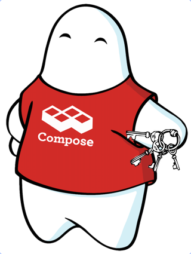
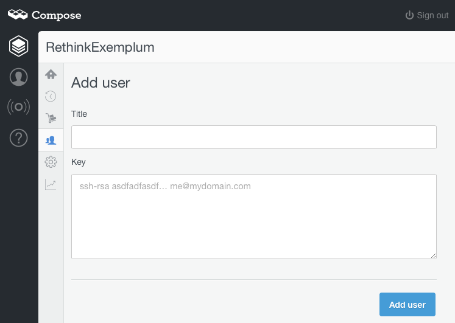
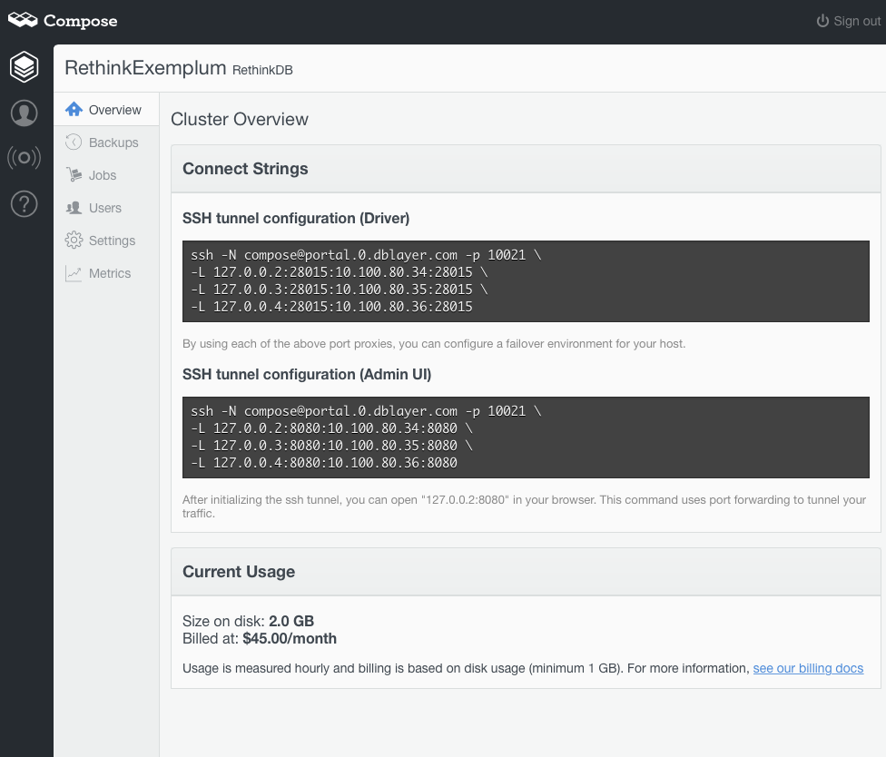
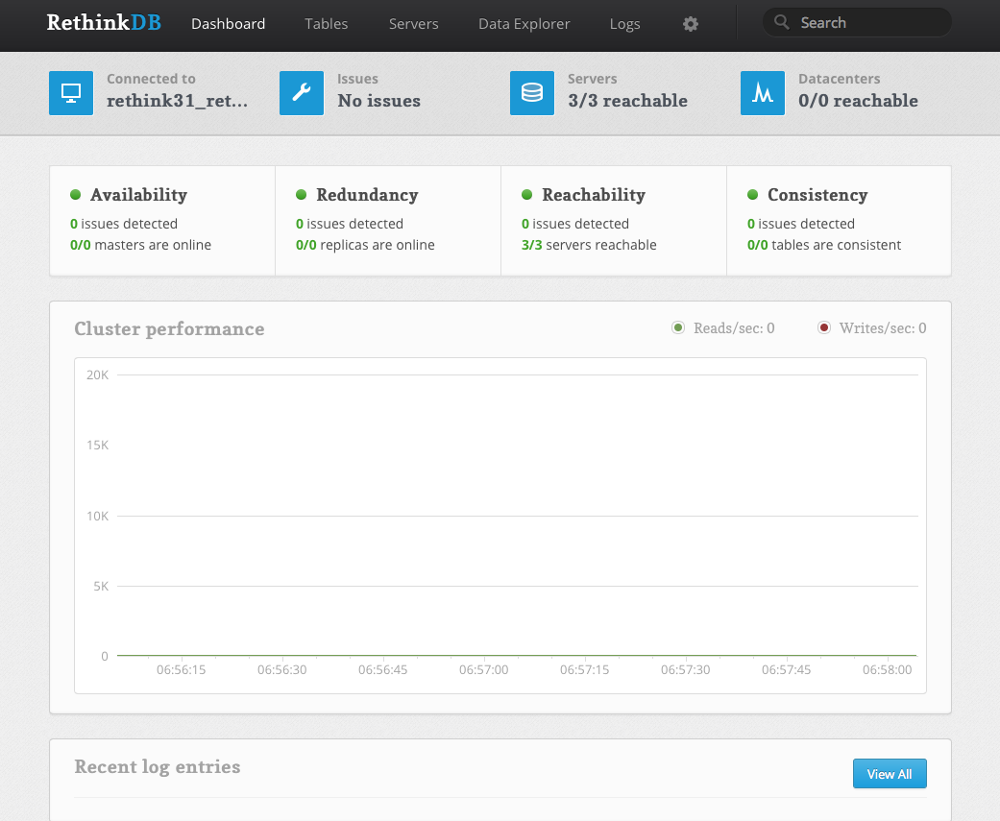

Connecting to Compose's RethinkDB deployments with SSH
If you install RethinkDB on your local system, you will see that it, by design, happily accepts connections from anywhere without authentication. This is great for development but does mean you have to think about how you deploy RethinkDB when you go into production. At Compose we’ve already done that thinking – our RethinkDB deployments run on their own private, isolated networks and the only way to connect to them is by using our SSH access portal. This portal lets you create an SSH tunnel from your system into that private network.
The first thing you will need before you start is some SSH keys. Now, the process for generating these varies slightly from platform to platform, but here are the steps for Mac and Linux:
First check you haven’t already got keys. Open a terminal and run ls -la ~/.ssh which will display the keys already generated. You want to see if there’s an id_rsa.pub there. If there is, you’ve already made a key and – providing you remember the passphrase you set for it – you should skip to the “Putting your key in” section below. For the rest of you, it’s time to cut some keys.
Cutting your keys
Open the terminal again and type
ssh-keygen -t rsa -C "your_email_address"
You’ll be asked where to save the key, just press enter for the default. You’ll then be asked for a passphrase. Choose a strong phrase – ideally a reasonably long one too. Once you’ve entered it, hit return and enter it again to verify that you actually entered what you think you entered. The key generator will then start up and will write out two files, id_rsa (the private part of your key that you hold on to) and id_rsa.pub (the public part you give to other people).
Putting your key in
Now we are ready to set up the SSH access portal. Go to the Compose dashboard and select your RethinkDB deployment. Then select Users on the menu. This shows the currently configured SSH users and should, if this is a new deployment, have no users listed and an Add user button in the top right. Click that and you’ll get to this screen:
The title field is there so you can give the key a meaningful unique name – fill it in with whatever will identify the key best for you. The Key text field is where we need to put the public part of our key in – you will need to copy the contents of the ida_rsa.pub file to that area. There are a few ways to do this. On a Mac, you can use the pbcopy command to load it into the clipboard like so:
pbcopy < ~/.ssh/id_rsa.pub
And then click in the key field and press Command-V to paste it in. On Linux, you could install xclip and then run:
xclip -sel clip < ~/.ssh/id_rsa.pub
To copy the file to the clipboard and Control-V to paste it in. Or you can just display the file in the terminal and cut-and-paste the output into the text area. The public key begins with ssh-rsa and a space and then is one long sequence of various characters ending in another space and finally the email address you used when you created it. You’ll need all of this text, including the ssh-rsa and email address when you copy and paste.
When you’ve got that in click the Add user button and your new SSH user will be created.
Digging the tunnel
What an SSH tunnel does is redirect local ports to a remote system, forwarding all the traffic over an encrypted channel. It uses the SSH command to establish the connection and then, instead of running a command remotely, SSH is told to listen to various local ports for traffic. When a program accesses those ports, SSH then replicates the communication with the port at the other end of SSH connection. This is all configured on an SSH command line, but you don’t have to work out what that command line should be.
If you go to the Overview of your RethinkDB deployment, you’ll see the top entry contains Connect Strings for creating the tunnel. For example, this is the admin UI connect string for an example deployment:
The important part, as far as getting to the Admin user interface, is the second connect string. In our example above, that’s this block.
ssh -N compose@portal.0.dblayer.com -p 10021
-L 127.0.0.2:8080:10.100.80.34:8080
-L 127.0.0.3:8080:10.100.80.35:8080
-L 127.0.0.4:8080:10.100.80.36:8080
It invokes the ssh command with the -N flag to stop it from starting any commands. The next part, compose@portal.0.dblayer.com, is the user (always compose) and host to connect to. The -p then specifies a port on that host to connect to. The port number will be different for every deployment.
The -L parameter then defines the port to be forwarded, from where, to where. So 127.0.0.2:8080:10.100.80.34:8080 means from the local “loopback” interface for 127.0.0.2, port 8080, to the remote host 10.100.80.341, port 8080. The second IP address will vary from deployment to deployment as each gets its own unique private IP addresses inside the private LAN.
There are three nodes set up for failover here, so three “-L” parameters are set with slightly different IP addresses. If you copy and paste the string into your terminal and let it run, it will configure a tunnel. Unless you are on a Mac that is…
A Mac OS X Note
Mac users, there’s a step you will need to take before this though because Apple does things slightly differently. On most Unix-like systems, all the addresses 127.0.0.1 to 255 are available as network loopback addresses (only connecting locally), but Apple decided to keep things simple and only set up 127.0.0.1. That means that you’ll have to configure the other addresses as aliases of 127.0.0.1. If you don’t do that, you’ll be told that SSH can’t bind to the port. So for each loopback you want to configure you need to do:
sudo ifconfig lo0 alias 127.0.0.2 up
That, of course, configures the 127.0.0.2 address. This command needs admin privilege, so is preceded by the “sudo” command and it should prompt you for an admin password. Repeat as needed, usually for 127.0.0.3 and 127.0.0.4. This change doesn’t survive a reboot so either add it to a script that you use to configure the tunnel or create a launchd service. The former is easiest, and we’ll cover the latter in follow-up article.
Connecting The Tunnel
Once you’ve executed your SSH connect string command, you may be asked for the passphrase to allow your key to be used. If there are no errors you’ll be ready to connect to the admin UI of RethinkDB. Fire up your web browser and point it at 127.0.0.2:8080 and you should meet the RethinkDB admin page:
The other connect string in the Overview will let client drivers from JavaScript, Python, Ruby or any other driver connect to the database. The difference is that they use port 28015 to connect to RethinkDB, so you need to forward that port between your system and your Compose RethinkDB deployment. You can combine the connect strings too, bringing all the -L parameters into one command like say:
ssh -N compose@portal.0.dblayer.com -p 10021
-L 127.0.0.2:28015:10.100.80.34:28015
-L 127.0.0.3:28015:10.100.80.35:28015
-L 127.0.0.4:28015:10.100.80.36:28015
-L 127.0.0.2:8080:10.100.80.34:8080
-L 127.0.0.3:8080:10.100.80.35:8080
-L 127.0.0.4:8080:10.100.80.36:8080
and this will set up the tunnel for the Admin UI and the driver ports.
Now you can tunnel your way to your Compose RethinkDB deployment and enjoy the rich, powerful database technology from your browser and from your applications.